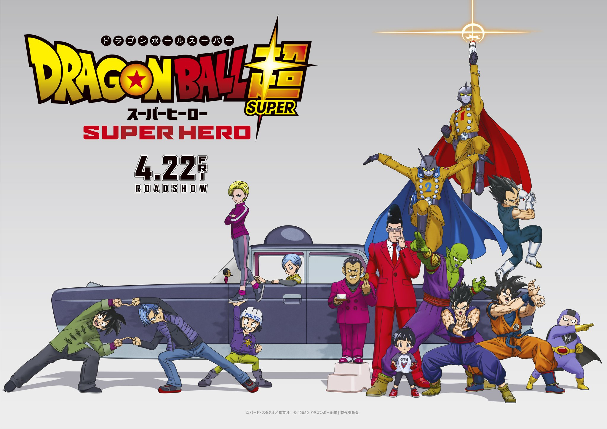

¡UN NUEVO PELIGRO AMENAZA A LOS GUERREROS Z EN ESTA NUEVA AVENTURA!
Son Goku destruyó en su momento a la Patrulla Roja. Ahora, ciertos individuos han decidido continuar con su legado y han creado a los androides definitivos Gamma 1 y Gamma 2. Estos dos androides se autoproclaman "superhéroes" y deciden atacar a Piccolo y a Gohan. ¿Cuál es el objetivo de la nueva Patrulla Roja? Ante un peligro inminente, llega el momento del despertar del superhéroe
¡Conoce mas aqui!
